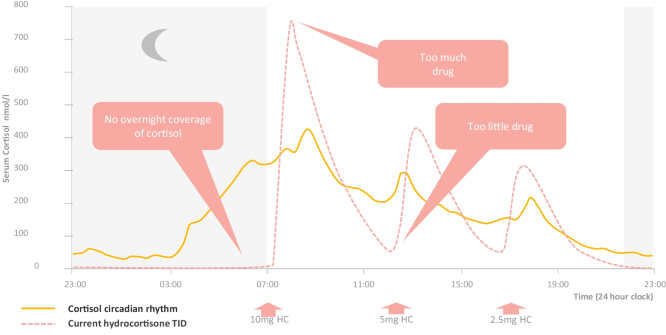

Lo Que Tu Cuerpo Necesita vs. Lo Que Realmente Obtienes

Ahora mismo vivir con insuficiencia suprarrenal significa vivir una montaña rusa que amenaza la vida. Todos. Los. Días.
Esto no es vivir - es sobrevivir. Todos los días.
La administración subcutánea que coincide con el ritmo natural de tu cuerpo permite eliminar tanto las subidas exageradas como los bajones que amenazan la vida
Ten el nivel justo de energía que necesitas en cada momento para tener una vida normal
No más bajadas repentinas que te mandan al hospital o a la cama.
Niveles apropiados de cortisol nocturno permiten un sueño más reparador
Tu cuerpo puede responder al estrés y enfermedad con niveles apropiados de cortisol
Programable y personalizable de acuerdo a las necesidades individuales.
Fabricación de bajo costo usando impresoras 3D estándar, haciendo la tecnología accesible mundialmente.
Horarios de dosificación basados en ciclos naturales del cortisol, con base en la investigación científica más reciente.
Tu apoyo podría prevenir la próxima visita a la sala de emergencias
Ya seas paciente, investigador, profesional de la salud o partidario - hay una manera de que marques la diferencia.
Este sitio web es nuestro primer paso. Estamos construyendo todo lo demás juntos, con tu ayuda.